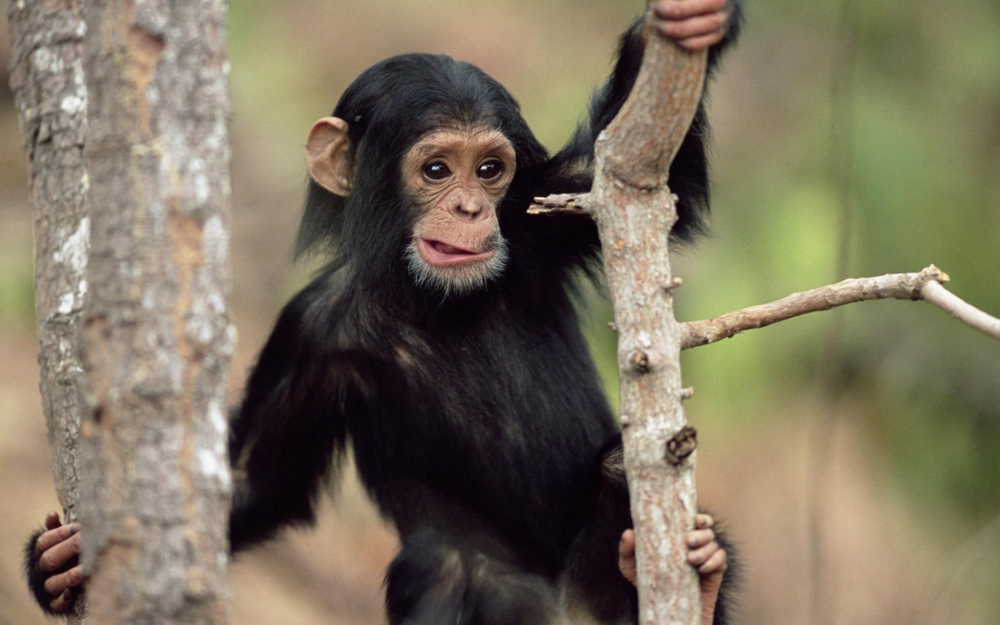

MONKEYS
DID YOU KNOW?
- There are over 260 different species of monkeys, and they are divided into two main groups: Old World monkeys, which are found in Africa and Asia, and New World monkeys, which are native to Central and South America. Each group has distinct characteristics and adaptations.
- Monkeys are highly social animals and often live in groups called troops or bands. Group size can vary widely depending on the species and habitat. Social interactions are crucial for communication, protection, and grooming.
- One way to distinguish between different types of monkeys is by their tails. Old World monkeys typically have tails that are not prehensile (not capable of grasping objects), while many New World monkeys have prehensile tails, which they can use like an extra limb for grasping branches and food.
- Monkey diets vary depending on their species and habitat. Some monkeys are primarily herbivores, feeding on leaves, fruits, and flowers, while others are omnivores, incorporating insects and small animals into their diets.
- Some monkey species are known for their ability to use tools. Capuchin monkeys, for example, use rocks and sticks to crack open nuts and shells. This tool use demonstrates a level of intelligence and problem-solving ability.
WHERE WILL YOU FIND THEM?
You will find the Monkeys at pen W4, next to the doflamingos, west side of the zoo.